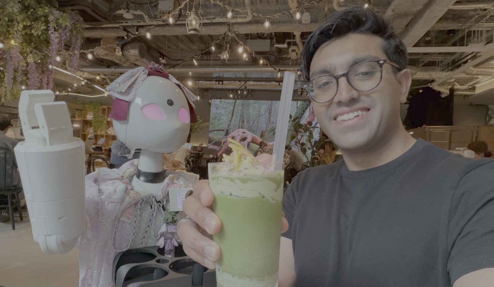

Kunal Gupta
Hi, I'm Kunal. I build robots and products that are meant to work in the real world. When they do not, that is usually where the interesting bit starts.
Japan deployment.
Japan was a good reminder that a robot can look great in a demo and still have plenty to learn outside. Deployment is where it has to fit into someone's actual day.


Robots have a way of keeping you honest.
A strong model is a nice start. The tricky part is making sure the robot is still useful when an ordinary Tuesday gets weird.





Stuff worth saving.
A running collection of project updates, travel notes, and anything else that felt worth saving.


Robotics Engineer
Wayve / Mountain View. Working on autonomy for self-driving cars.
Founder in Residence
Entrepreneur First / San Francisco. Explored robotics tools, training, and embodiments in an incubator cohort.
Analyst Extern
Battery Ventures / Remote. Supported sourcing and diligence for early- and growth-stage technology investments.
Full-Team Lead
Cornell Electric Vehicles / Ithaca. Led a 60-person team building autonomous electric vehicles.
SWE Intern
Amazon AGI / Boston. Built an ML infrastructure module for generating Alexa SLU training data.
Researcher
Collective Embodied Intelligence Lab / Ithaca. Worked on perception and control for bio-inspired swarm-robot coordination research.
Robotics Intern
Dynamic Locomotion / Groton. Built embedded and electrical systems for humanoid joint actuation.
Co-Founder & CTO
Visions / The Hague and Kotor. Led the technical work for immersive tourism platforms with Montenegro's national tourism organization.